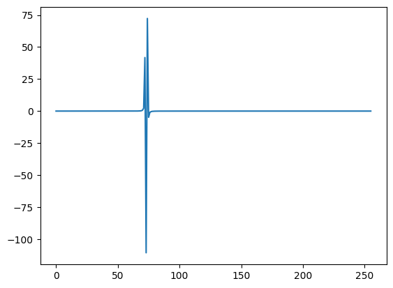
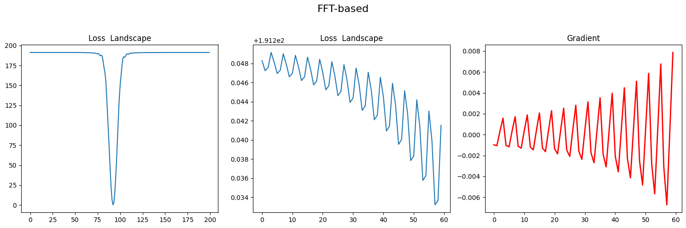
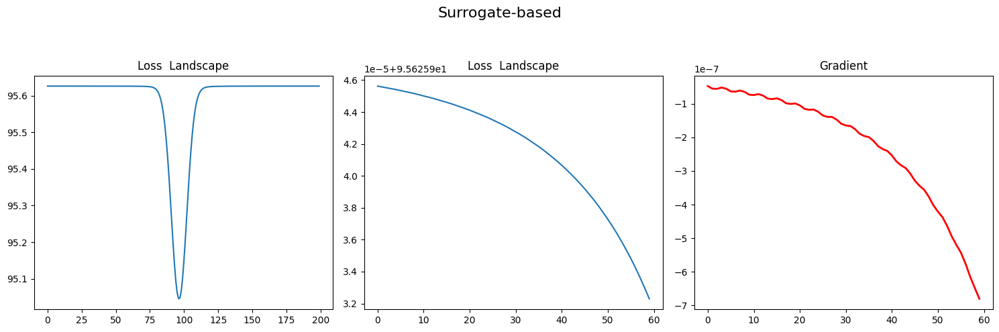

Local Non-convexity
[1]:
import RFDT as ivt
import torch
import torch.nn as nn
import matplotlib.pyplot as plt
import numpy as np
Virtual Radar
We use a basic radar model from RFDT
[2]:
radar = ivt.SimpleRadar()
range_bin = np.arange(1,257) * radar.range_resolution
We define two function, processing using FFT and surrogate model, respectively.
[3]:
def process_fft(distance):
distance_tensor =torch.tensor([distance])#.cuda()
intensity_tensor = torch.tensor([10000.0])#.cuda()
gt_fft = radar.chirp(distance_tensor)
gt_db = 20*torch.log10(torch.abs(gt_fft))
return gt_fft, None,gt_db
def process_surrogate(distance):
distance_tensor =torch.tensor([distance])#.cuda()
intensity_tensor = torch.tensor([10000.0])#.cuda()
gt_fft = ivt.range_surrogate(distance_tensor, torch.tensor([1]), torch.tensor(range_bin))
return gt_fft, None,None
Target range profile (Ground Truth)
[4]:
gt_fft, gt_sig,gt_db = process_fft(distance=3.1415926539)
[5]:
plt.plot(gt_fft.cpu().numpy().real)
[5]:
[<matplotlib.lines.Line2D at 0x7f4f00226580>]

We calculate all possible range x value to draw the loss landscape.
Loss Landscape
[6]:
def cal_loss_landsacpe(fn):
n_sub_bin = 4
max_iter = 256*n_sub_bin
x_values = torch.linspace(0, radar.max_range, max_iter)
loss_list = []
loss_fn = nn.MSELoss()
for v in x_values:
pred_fft, pred_sig, pred_db = fn(v)
loss = loss_fn(torch.abs(pred_fft), torch.abs(gt_fft))
# loss = loss_fn(pred_fft.real, gt_fft.real) + loss_fn(pred_fft.imag, gt_fft.imag)
# loss = loss_fn(torch.abs(pred_fft), torch.abs(gt_fft)) + loss_fn(torch.angle(pred_fft), torch.angle(gt_fft))
loss_list.append(loss.cpu().numpy())
return loss_list
Visualization
[7]:
def plot(loss_list,title=""):
grad = torch.zeros(1024)
for i in range(1, 1024): # Start from 1 to avoid index -1
grad[i] = loss_list[i] - loss_list[i-1]
# Create a figure with three subplots in one row
fig, axs = plt.subplots(1, 3, figsize=(15, 5))
# First plot: loss_list from index 200 to 400
axs[0].plot(loss_list[200:400])
axs[0].set_title('Loss Landscape')
# axs[0].set_axis_off()
# Second plot: loss_list from index 160 to 220
axs[1].plot(loss_list[160:220])
axs[1].set_title('Loss Landscape')
# axs[1].set_axis_off()
# Third plot: grad from index 160 to 220
axs[2].plot(grad[160:220], 'r', linewidth=2)
axs[2].set_title('Gradient')
# axs[2].set_axis_off()
# Add a centered title for the entire figure
fig.suptitle(title, fontsize=16)
# Adjust layout for better spacing
plt.tight_layout(rect=[0, 0, 1, 0.95])
# Display the plots
plt.show()
[8]:
fft_loss_landscape = cal_loss_landsacpe(process_fft)
surrogate_loss_landscape = cal_loss_landsacpe(process_surrogate)
Results
[9]:
plot(fft_loss_landscape, "FFT-based")

[10]:
plot(surrogate_loss_landscape, "Surrogate-based")

Surrogate model provides smooth gradient and loss landscape for optimization.